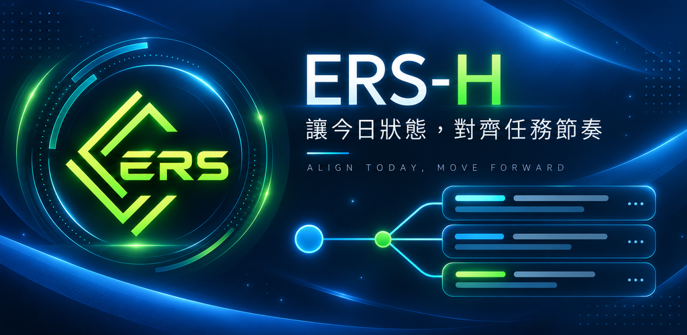

ERS-H 隱私權政策
1. 適用範圍
本政策說明 ERS-H Android App 如何在使用者裝置上處理資料。若未來版本加入網路、帳號、雲端同步、分析或第三方資料傳輸功能，必須先更新本政策與 Google Play 申報。
2. ERS-H 是什麼
ERS-H 是個人狀態與任務配置輔助工具。App 依使用者輸入的睡眠、早餐、狀況與事件等資料估計當日可用能力，並提供本機 To-Do、3MOR 與任務適配功能。
3. 可能處理的資料種類
- Profile：顯示名稱、年齡、生理性別、身高、體重與建立時間。
- ERS 輸入與歷史：入睡／起床時間、睡眠分鐘、早餐、慢性狀況、急性狀況、每日事件或行為、ERS 顯示分數與紀錄時間。
- 校準資料：Profile 與輸入快照、主觀身心狀態、工作能力與任務結果、同意／授權、資料品質、版本、裝置平台類別、日期時間與 UTC offset。
- 反應時間與試行資料：隨機等待時間、刺激與回應時間、反應時間、trial 結果、session 識別碼及由 Profile id 在本機衍生的假名 key。
- To-Do 與 3MOR：任務標題、備註、完成狀態、主觀困難、任務能量要求、3MOR 模式、衍生任務要求、配置、人工覆寫、適配結果、理由與 policy 版本。
4. 資料來源
資料來自使用者在 App 內主動輸入或操作，以及 App 依這些輸入在裝置上計算、衍生或記錄的結果。ERS-H 不從 Health Connect、穿戴裝置、聯絡人、位置、相機或麥克風取得資料。
5. 資料用途
資料用於建立與切換本機 Profile、計算及保存 ERS、執行校準與反應時間試驗、管理 To-Do、配置 3MOR、產生當日任務適配結果，以及維持 Profile 隔離與本機計算一致性。
6. 本機儲存
ERS-H 的 Profile、ERS 紀錄、Calibration、To-Do、3MOR 與任務適配資料均儲存在使用者裝置的 App 私有 Room／SQLite 資料庫。App manifest 已停用 Android App 備份。
7. 是否傳送至開發者伺服器
本版本沒有登入、雲端同步或遠端 API，production manifest 沒有 INTERNET permission，production runtime 也未發現網路傳輸程式碼。因此，本版本不會把上述使用者資料傳送至 ERS-H 開發者伺服器。
8. 是否分享第三方
本版本不會把上述使用者資料分享給第三方。
9. 第三方 SDK
本版本使用 AndroidX、Jetpack Compose、Room 與 Coil 支援 App 的本機介面、資料庫與 bundled 圖像顯示；未整合 Firebase、Crashlytics、分析、廣告、追蹤、社群、雲端、計費、Retrofit 或 OkHttp SDK。
10. 資料保留
資料會保留在使用者裝置的 App 私有儲存空間，直到使用者在 App 內刪除相關資料、刪除所屬 Profile，或移除 App。本版本沒有開發者伺服器上的保留副本。
11. 資料刪除
使用者可在 App 內刪除個別 ERS 歷史紀錄、部分校準紀錄，或刪除 Profile 及其關聯資料。因本版本沒有帳號或雲端資料，無需向伺服器提出帳號刪除請求。
12. Profile 刪除的效果
刪除某個 Profile 會一併刪除該 Profile 的 ERS 歷史、To-Do、任務主觀評估、3MOR／任務要求衍生資料、任務適配結果、校準觀察、反應時間 trial 與 real-pilot session。此動作不會刪除其他 Profile 的資料。
13. App 移除後資料狀態
Android 一般會在移除 App 時移除其 App 私有儲存資料。實際行為仍可能受裝置、作業系統、裝置管理或系統還原機制影響，因此 ERS-H 不作絕對刪除或絕對不可復原的承諾。本版本已停用 Android App 備份。
14. 健康相關資料說明
睡眠、身高、體重、健康狀況與主觀身心狀態可能屬敏感健康相關資料。ERS-H 只在裝置上處理這些資料，不使用 Health Connect，也不將健康相關資料傳送至開發者或第三方。
15. 非醫療診斷聲明
ERS-H 是個人狀態與任務配置輔助工具，不是醫療器材，也不能診斷、治療、治癒或預防任何疾病或健康狀況。ERS-H 的分數與狀態分類不應作為醫療決策的唯一依據。如需醫療建議、診斷或治療，請諮詢合格的醫療專業人員。
「危險」只代表 ERS-H 所估計的當日可用能力極低，不代表醫療急症、疾病診斷或生命危險。
16. 兒童／年齡邊界
Profile 年齡欄位用於 ERS 計算與校準情境，不代表 App 已針對兒童設計。本版本不提供帳號、線上家長同意或兒童專屬流程。正式上架前，開發者必須確認 Google Play 目標年齡與商店文案和本政策一致。
17. 資料安全限制
本版本使用 Android App 私有儲存並停用 App 備份，但任何裝置或軟體都無法保證絕對安全。裝置遭未授權存取、作業系統漏洞、惡意軟體，或使用者自行複製／匯出裝置資料仍可能造成風險。
18. 政策更新方式
若資料處理方式或產品功能改變，ERS-H 會更新本政策的版本、日期與內容，並透過 App 或 Google Play 商店頁面提供最新版本。
19. 聯絡機制
隱私權與支援聯絡信箱：yusen.civilization.8@gmail.com